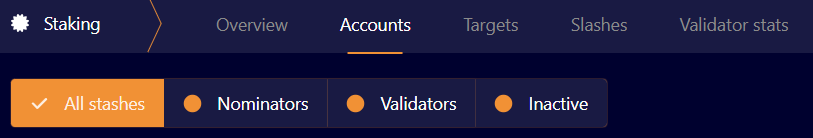

How to Stake GGXT Tokens
To stake GGXT tokens in the GGX Sydney testnet, please follow the steps:
- Acquire tokens. Please check out our Sydney Validator Program.
- Create two Substrate accounts. You can do that using PolkadotJS.
- Distribute tokens between the controller account and the stash account. You will need at least 1000 GGXT tokens in the stash to stake.
- After setting up a validator node and receiving tokens you can stake using our block explorer.
Go to Network → Staking

Go to Accounts. You can see Nominators and Validators there.

You can bond tokens using +Stash button. You will need to populate the following fields:
- Stash account - Select the stash account created in step 2.
- Controller account - Select the controller account created in step 2. This account will also need a small amount of GGXT to pay for controlling transactions.
- Value bonded - How much GGXT from the Stash account you want to bond/stake. Note that withdrawing any bonded amount requires the duration of the unbonding period.
- Payment destination - The account where the rewards from validating are sent.
Once everything is filled in properly, click
Bondand sign the transaction with your Stash account.
Make sure not to bond all your GGXT balance since you cannot pay transaction fees from your bonded balance.
Session keys
To get your node nominated, please follow the steps:
Get your node session key. Assuming you are running using docker, you can do that running the command:
docker exec -it ggxchain-node curl -H "Content-Type: application/json" -d '{"id":1, "jsonrpc":"2.0", "method": "author_rotateKeys", "params":[]}' http://localhost:9933Go to Network → Staking
- Go to Accounts. Click Set Session Key next to stash account created earlier.
- Enter the output from
author_rotateKeysfrom step 2 and click "Set Session Key". - Authorize the transactions. Now others can nominate your node.
- Go to Network → Staking
- Go to Accounts. As before, you can see Nominators and Validators there
You can bond tokens using +Stash button, nominate a validator using +Validator button and add a Nominator using +Nominator button